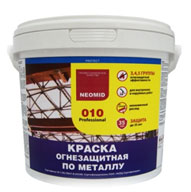
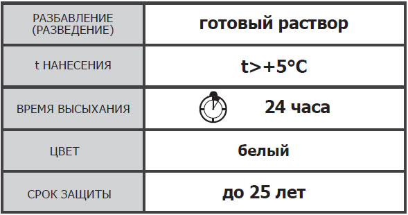

NEOMID
«Огнезащитная краска для металла»
ТУ 2316-008-98536873-2012
Торговая марка NEOMID


НАЗНАЧЕНИЕ:
«Огнезащитная краска для металла» предназначена для обработки металлических конструкций для придания специальных (огнезащитных) свойств, при окраске конструкций различного назначения образует декоративное покрытие.
ПРЕИМУЩЕСТВА:
Краска заслужила отличные отзывы монтажных компаний: (густая, ложится ровно, не идет «паутиной», низкий расход, быстро сохнет, высокая укрывистость ), отлично подходит для безвоздушных окрасочных аппаратов, в том числе: «GRACO», «WAGNER».
ДЕЙСТВИЕ КРАСКИ:
Под воздействием огня происходит образование устойчивого вспененного (увеличение в 50-60 раз) теплоизолирующего слоя, предохраняющего окрашенную поверхность от распространения пламени и воздействия высоких температур.
ОБЛАСТЬ ПРИМЕНЕНИЯ:
«Огнезащитная краска для металла» предназначена для повышения предела огнестойкости стальных конструкций, сооружений промышленного и гражданского строительства, эксплуатируемых внутри помещений с неагрессивной средой, на открытом воздухе, не подвергающихся прямому воздействию воды.
При защите металлических конструкций «Огнезащитная краска для металла» обеспечивает следующие пределы огнестойкости 45, 60, 90 мин в соответствии с Федеральным законом № 123-ФЗ от 22.07.2008 «Технический регламент о требованиях пожарной безопасности» и ГОСТ Р 53295-2009.
ПОДГОТОВКА ПОВЕРХНОСТИ:
Обработка краской осуществляется при температуре окружающей среды не ниже плюс 5°С и относительной влажности воздуха не более 80 %.
Перед нанесением убрать наслоения краски, пыль и грязь щеткой с металлической щетиной, ветошью. При необходимости можно обезжирить металлическую поверхность с помощью растворителя, например, ацетона.
НАНЕСЕНИЕ:
Огнезащитная краска для металла поставляется однокомпонентной в готовом к употреблению виде. Перед использованием краску необходимо тщательно перемешать миксером до однородности.
Исключается разбавление краски перед нанесением на металлические конструкции.
Нанесение краски осуществляется агрегатами безвоздушного распыления высокого давления; а также вручную (кистью, валиком) до достижения необходимой толщины сухого слоя, которая определяется при проектировании работ, направленных на повышение пределов огнестойкости металлоконструкций, путем 3х-4х кратного нанесения на металлоконструкции.
Нанесение второго слоя допускается после окончательного высыхания первого, но не менее, чем через 6 часов. Толщина сухого слоя при однократном нанесении зависит от метода нанесения, конфигурации конструкции составляет 0,2 - 0,4 мм.
Краску наносят на металлическую поверхность, предварительно покрытую грунтом марки ГФ-021.
РАСХОД СРЕДСТВА:
|
Группы огнезащитной эффективности (НПБ 236-97/ГОСТ Р 53295-2009)
|
||||||||
|
Приведенная толщина металла*, мм |
5-я/6-я группа (не менее 30 мин), 30 мин |
4-я/5-я группа (не менее 45 мин), 45 мин |
3-я/4-я группа (не менее 60 мин), 60 мин |
3-я/3-я группа (не менее 90 мин), 90 мин |
||||
|
Толщина покрытия, мм |
Расход краски, кг/м² (без потерь) |
Толщина покрытия, мм |
Расход краски, кг/м² (без потерь) |
Толщина покрытия, мм |
Расход краски, кг/м² (без потерь) |
Толщина покрытия, мм |
Расход краски, кг/м² (без потерь) |
|
|
2,0 |
1,10 |
1,60 |
1,60 |
2,4 |
2,4 |
3,35 |
- |
- |
|
2,5 |
1,0 |
1,48 |
1,38 |
2,11 |
2,26 |
3,15 |
- |
- |
|
3,0 |
0,93 |
1,36 |
1,17 |
1,82 |
2,12 |
2,96 |
- |
- |
|
3,4 |
0,76 |
1,26 |
1,0 |
1,6 |
2,0 |
2,80 |
- |
- |
|
4,1 |
0,64 |
0,91 |
0,90 |
1,35 |
1,73 |
2,52 |
- |
- |
|
4,6 |
0,62 |
0,85 |
0,85 |
1,31 |
1,66 |
2,47 |
- |
- |
|
5,1 |
0,60 |
0,79 |
0,81 |
1,28 |
1,52 |
2,26 |
- |
- |
|
5,8 |
0,46 |
0,70 |
0,75 |
1,23 |
1,33 |
1,96 |
2,0 |
2,80 |
|
6,1 |
- |
- |
0,72 |
1,21 |
1,24 |
1,84 |
1,90 |
2,70 |
|
6,8 |
- |
- |
- |
- |
1,07 |
1,54 |
1,66 |
2,47 |
|
7,0 |
- |
- |
- |
- |
1,05 |
1,47 |
1,60 |
2,40 |
|
7,4 |
- |
- |
- |
- |
0,85 |
1,31 |
1,52 |
2,26 |
|
8,0 |
- |
- |
- |
- |
0,67 |
1,07 |
1,42 |
2,05 |
|
8,7 |
- |
- |
- |
- |
0,49 |
0,77 |
1,30 |
1,91 |
|
9,8 |
- |
- |
- |
- |
- |
- |
1,10 |
1,60 |
|
11,0 |
- |
- |
- |
- |
- |
- |
1,05 |
1,47 |
ХРАНЕНИЕ И ТРАНСПОРТИРОВКА:
Транспортировать отдельно от пищевых продуктов при температуре не ниже 0°С.
Беречь от детей.
Хранить в плотно закрытой таре при температуре от +5°С до + 40°С на расстоянии не менее 1,5-2 м от источника отопления.
Гарантийный срок хранения 24 месяца.
Утилизация согласно СанПиН 2.1.7.1322-03.